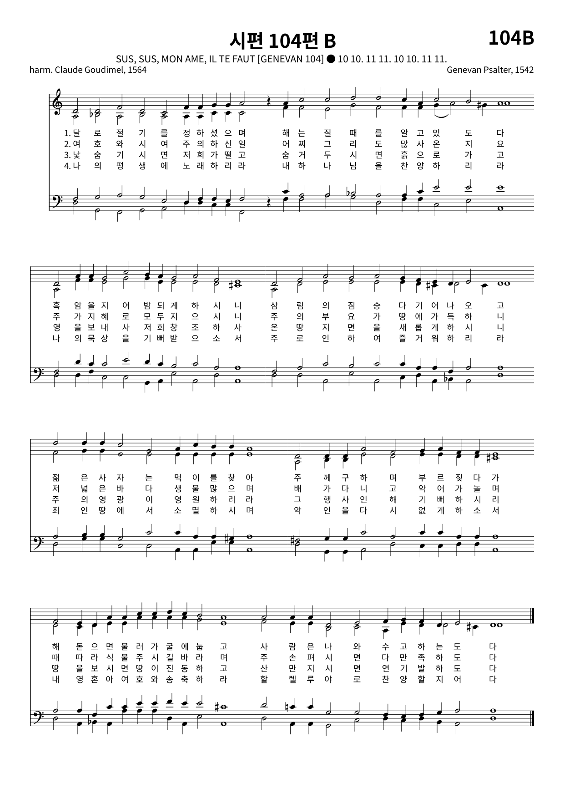

시편 104편 B
SUS, SUS, MON AME, IL TE FAUT [GENEVAN 104] · 10 10. 11 11. 10 10. 11 11.
곡조: Genevan Psalter, 1542 · 화성: Claude Goudimel, 1564 · 가사: 개역한글판 시편 104편 편역(AI 초벌 편역판 · 신학 감수 전) · 4절
시편 104편은 2곡으로 나누어 실었습니다: A B · 이 곡은 시편 104편 가사의 5~8번째 절입니다.
악보 PDF MusicXML(출력용) MusicXML(반주용, 전주·반복 포함) 개역한글 시편 104편 읽기
악보
← 시편 104편 A 목록반주 재생(준비 중)시편 105편 A →
가사
1절
달로 절기를 정하셨으며
해는 질 때를 알고 있도다
흑암을 지어 밤 되게 하시니
삼림의 짐승 다 기어 나오고
젊은 사자는 먹이를 찾아
주께 구하며 부르짖다가
해 돋으면 물러가 굴에 눕고
사람은 나와 수고하는도다
달로 절기를 정하셨으며
해는 질 때를 알고 있도다
흑암을 지어 밤 되게 하시니
삼림의 짐승 다 기어 나오고
젊은 사자는 먹이를 찾아
주께 구하며 부르짖다가
해 돋으면 물러가 굴에 눕고
사람은 나와 수고하는도다
2절
여호와시여 주의 하신 일
어찌 그리도 많사온지요
주가 지혜로 모두 지으시니
주의 부요가 땅에 가득하니
저 넓은 바다 생물 많으며
배가 다니고 악어가 놀며
때 따라 식물 주시길 바라며
주 손 펴시면 다 만족하도다
여호와시여 주의 하신 일
어찌 그리도 많사온지요
주가 지혜로 모두 지으시니
주의 부요가 땅에 가득하니
저 넓은 바다 생물 많으며
배가 다니고 악어가 놀며
때 따라 식물 주시길 바라며
주 손 펴시면 다 만족하도다
3절
낯 숨기시면 저희가 떨고
숨 거두시면 흙으로 가고
영을 보내사 저희 창조하사
온 땅 지면을 새롭게 하시니
주의 영광이 영원하리라
그 행사 인해 기뻐하시리
땅을 보시면 땅이 진동하고
산 만지시면 연기 발하도다
낯 숨기시면 저희가 떨고
숨 거두시면 흙으로 가고
영을 보내사 저희 창조하사
온 땅 지면을 새롭게 하시니
주의 영광이 영원하리라
그 행사 인해 기뻐하시리
땅을 보시면 땅이 진동하고
산 만지시면 연기 발하도다
4절
나의 평생에 노래하리라
내 하나님을 찬양하리라
나의 묵상을 기뻐 받으소서
주로 인하여 즐거워하리라
죄인 땅에서 소멸하시며
악인을 다시 없게 하소서
내 영혼아 여호와 송축하라
할렐루야로 찬양할지어다
나의 평생에 노래하리라
내 하나님을 찬양하리라
나의 묵상을 기뻐 받으소서
주로 인하여 즐거워하리라
죄인 땅에서 소멸하시며
악인을 다시 없게 하소서
내 영혼아 여호와 송축하라
할렐루야로 찬양할지어다